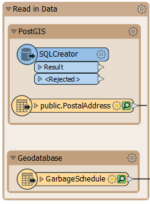
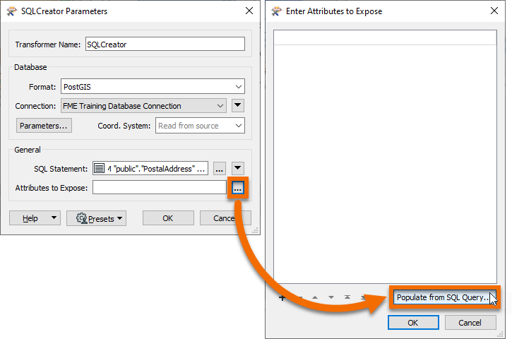
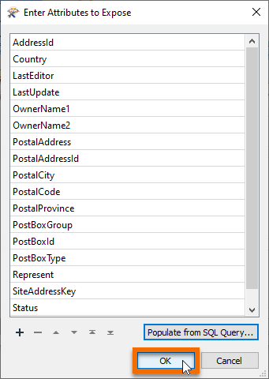

After completing this unit, you’ll be able to:
Members of the public often call the city to ask what day their garbage collection is. To help the city has an internal system hosted on FME Server. Members of the planning department can lookup an address ID, enter it into a published parameter, and the system retrieves the garbage pickup information.
The system works but is perhaps slower than it should be. Let’s run this short exercise to discover why.
To use a PostGIS database as source requires a connection to it. If you are using Geodatabase instead of PostGIS, you can skip to step 2.
In a web browser visit http://fme.ly/database - this shows the parameters for a PostGIS database running on Amazon RDS.
Start FME Workbench 2021.0 and select Tools > FME Options from the menu bar.
Click on the icon for the Database Connections category, then click the [+] button to create a new connection. In the "Add Database Connection" dialog enter the connection parameters obtained through the web browser.
Give the connection a name (if you call it FME Training Database Connection it will match the starting workspace) and click Save.

NB: Yes, the password is fmedata as well!
Then click OK to close the FME Options dialog.
Open the starting workspace of your choice (PostGIS or Esri Geodatabase) in FME Workbench 2021.0.
The workspace looks something like this:

Basically, a published parameter accepts an address ID. The postal address database is read and filtered against this ID. The chosen address is used in a spatial overlay against garbage zones. The result is formatted in HTML and written out with a Text File writer.
To get a comparison, run the workspace. Use Prompt Mode to be prompted for an address ID. A suitable address ID to use is 127209 (PostGIS) or 6135 (Geodatabase).
The result, in a web browser, is this:

The performance will read like this:
PostGIS
INFORM|FME Session Duration: 8.0 seconds. (CPU: 1.7s user, 0.2s system) INFORM|END - ProcessID: 7540, peak process memory usage: 141808 kB, current process memory usage: 98924 kB
Geodatabase
INFORM|FME Session Duration: 2.2 seconds. (CPU: 1.8s user, 0.3s system) INFORM|END - ProcessID: 724, peak process memory usage: 136420 kB, current process memory usage: 93684 kB
The Geodatabase is quicker because it is being read from your own file system, not a remote database.
Neither PostGIS nor Geodatabase has a WHERE clause for the reader itself, but their feature types do. So, inspect the properties for the PostalAddress reader feature type and in the WHERE Clause parameter enter:
PostGIS
"AddressId" = $(AddressID)
Geodatabase
OBJECTID = $(AddressID)

For PostGIS, be sure to notice the lower-case "d" in the "Id" part of the field name! Also, note the difference in the use of quotes between the two formats.
Now we have the WHERE clause the Tester transformer is no longer required, so delete it.
Re-run the workspace. This time only 1 feature is read from the database. The performance improves accordingly:
PostGIS
INFORM|FME Session Duration: 5.3 seconds. (CPU: 0.7s user, 0.3s system) INFORM|END - ProcessID: 7440, peak process memory usage: 138924 kB, current process memory usage: 96848 kB
Geodatabase
INFORM|FME Session Duration: 0.9 seconds. (CPU: 0.5s user, 0.3s system) INFORM|END - ProcessID: 7224, peak process memory usage: 126632 kB, current process memory usage: 93180 kB
Memory usage hasn’t improved, but the translation ran faster.
SQL transformers can be faster than using database readers. Add an SQLCreator to your canvas above the PostGIS reader.

Double-click it to open its parameters. Select PostGIS for the Format and FME Training Database Connection for the Connection.

Click the ellipsis button next to SQL Statement. Enter the following SQL statement:
SELECT * FROM "public"."PostalAddress" WHERE "AddressId" = $(AddressID)
This simple statement reads all the features in the PostalAddress table that have an AddressId matching the user parameter value. This statement accomplishes the same thing as the reader parameter, so its speed will ultimately be similar. But in more complex situations being able to read directly with SQL lets the database do the work.
Click OK.
We could run the translation at this point, but all the incoming attributes from the database would be unexposed. To make sure they get exposed, click the ellipsis button next to Attributes to Expose. Then click Populate from SQL Query...
For this SQL statement, but remove the WHERE clause.
SELECT * FROM "public"."PostalAddress"
Click OK. The Enter Attributes to Expose dialog will be populated with all the attributes present in the PostalAddress table. These will now be exposed properly.

Click OK twice to finish configuring the SQLCreator. Connect it to the PointOnAreaOverlayer and disable the PostGIS reader feature type.

Run your workspace. Performance will probably be similar, but if the query was more complex, this route could save valuable time.
2021-05-12 15:32:08| 1.0| 0.0|INFORM|FME Session Duration: 8.9 seconds. (CPU: 0.3s user, 0.7s system) 2021-05-12 15:32:08| 1.0| 0.0|INFORM|END - ProcessID: 158936, peak process memory usage: 119556 kB, current process memory usage: 108624 kB